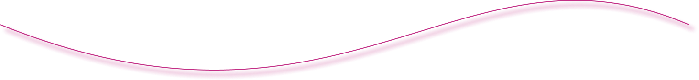
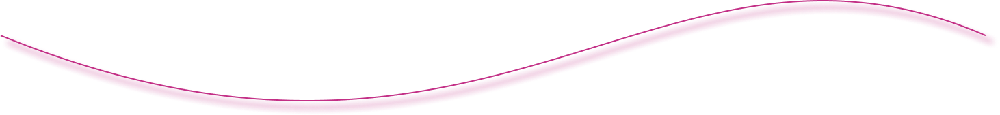

Olá, mundo!
Sou a Amanda, uma mulher apaixonada por tecnologia e entusiasta de UX e UI Design. Acredito que através da tecnologia podemos tornar o mundo um lugar melhor!
Um dos meus sonhos é poder fazer a diferença para a sociedade através do meu trabalho e utilizo como inspiração todas as mulheres da área de TI que me representam!
" Nunca estou realmente satisfeita quanto a entender alguma coisa, porque, até onde entendo,
a minha compreensão só pode ser uma fração infinitesimal de tudo o que eu quero compreender. "
- Ada Lovelace.